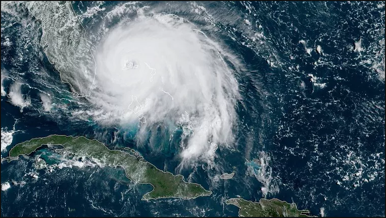

NOTICIAS
6 Hongkongers sobre cómo las protestas han transformado sus vidas y su ciudad
"Si no ganamos... no creo que podamos ganar. Pero siento que deberiamos hacer algo, aunque hay una pequeña posibilidad".
fecha | 30-04-2019
America's gun problem, explained
The public and research support gun control. Here's how ir could help - and why it dosen't pass.
fecha | 30-04-2019
Gun laws were loosened in Texas the day after the state's second mass shooting in a month
The new laws offer new rights and protections to Texas gun owners.
fecha | 30-04-2019

El huracán Dorian es un peligroso huracán de categoría 4: Golpea las Bahamas y se dirige peligrosamente cerca a Florida
El peor de los casos es jugar a las Bahamas, Florida y el sureste de EE. UU. Pueden evitarse lo peor, pero la incertidumbre permanece.
fecha | 30-04-2019
"Unions for all": the new plan to sabe the American labor movement
Sectorial bargaining is the future of American labor unions
fecha | 30-04-2019
Odessa and Midland, Texas, shootings: what we know
At least 21 people were shot. At least seven people were killed
fecha | 30-04-2019
Trump wants to cut taxes for rich people yet again
Indexing capital gains to inflation, as Trump is considering, would overwhelmingly benefit the top 1 percent.
fecha | 30-04-2019
Bristling with nerdy energy, Alton Brown's Good Eats is back - and not a moment too soon
One of the best food TV shows ever is beyond compare, even after a 7-year hiatus
fecha | 30-04-2019